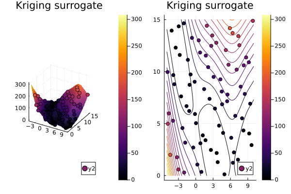

Improved Branin function
The Branin function is smooth, deterministic, and has three global minima of equal value. That makes it a clean test, but an unrealistic one: a real objective evaluated by simulation is rarely reproducible to the last bit.
The improved Branin function adds a time-varying perturbation inside the cosine term, turning the landscape into something closer to what an optimizer meets in practice:
\[f(x_1, x_2, \tau) = \left(x_2 - \frac{5.1}{4\pi^2}x_1^2 + \frac{5}{\pi}x_1 - 6\right)^2 + 10\left(1 - \frac{1}{8\pi}\right)\cos(x_1 + \tau\,\xi) + 10, \qquad \xi \sim \mathcal{N}(0, 1)\]
where time_step is $\tau$. Because $\xi$ is drawn afresh on every call, the objective is stochastic: two evaluations at the same point disagree.
using Surrogates, Plots, Random
Random.seed!(42)
function improved_branin(x, time_step)
x1 = x[1]
x2 = x[2]
b = 5.1 / (4 * pi^2)
c = 5 / pi
r = 6
a = 1
s = 10
t = 1 / (8 * pi)
# Time-varying perturbation of the phase, redrawn on every call.
noise = randn() * time_step
term1 = a * (x2 - b * x1^2 + c * x1 - r)^2
term2 = s * (1 - t) * cos(x1 + noise)
return term1 + term2 + s
endimproved_branin (generic function with 1 method)The seed matters here: without it, every run of this page — and every build of these docs — produces a different surface.
p = [2.5, 7.5]
repeats = [improved_branin(p, 0.1) for _ in 1:6]
extrema(repeats)(23.701290125042682, 24.6646888082421)Fitting a surrogate
n_samples = 80
lower_bound = [-5.0, 0.0]
upper_bound = [10.0, 15.0]
xys = sample(n_samples, lower_bound, upper_bound, SobolSample())
zs = [improved_branin(xy, 0.1) for xy in xys]
kriging_surrogate = Kriging(xys, zs, lower_bound, upper_bound)Kriging{Vector{Tuple{Float64, Float64}}, Vector{Float64}, Vector{Float64}, Vector{Float64}, Vector{Float64}, Vector{Float64}, Float64, Vector{Float64}, Float64, LinearAlgebra.Cholesky{Float64, Matrix{Float64}}}([(-4.6484375, 5.9765625), (2.8515625, 13.4765625), (6.6015625, 2.2265625), (-0.8984375, 9.7265625), (0.9765625, 0.3515625), (8.4765625, 7.8515625), (4.7265625, 4.1015625), (-2.7734375, 11.6015625), (-1.8359375, 3.1640625), (5.6640625, 10.6640625) … (4.55078125, 6.85546875), (-2.94921875, 14.35546875), (-2.01171875, 0.29296875), (5.48828125, 7.79296875), (9.23828125, 4.04296875), (1.73828125, 11.54296875), (-0.13671875, 5.91796875), (7.36328125, 13.41796875), (3.61328125, 2.16796875), (-3.88671875, 9.66796875)], [114.56931061630038, 120.86448372180156, 19.81174801649712, 20.517280684532217, 32.51258677057285, 42.080700087365464, 17.06358251785045, 1.2355441750036267, 46.7340761268912, 108.79310506066467 … 37.70819787561763, 6.846646171515622, 92.91774719946844, 61.8724840436293, 3.418853495677311, 72.33967837472396, 19.671399812949012, 161.20112965508528, 1.3668869980626734, 22.44504845317638], [-5.0, 0.0], [10.0, 15.0], [2.0, 2.0], [0.009304386270082723, 4.297085448248633e-6], 68986.80399474659, [1.409868661435304e10, -6.178095169980143e9, -6.628196784919363e9, -4.369097211246326e9, -8.228022876791527e8, 1.5173633565956472e10, -2.2436752359383945e9, 5.505967996044721e9, 1.1218953380748684e10, 5.867811773141119e9 … 4.758645464525202e9, 8.470973686883756e9, -2.478100093916329e10, 2.3647427448288177e10, -6.629449650785061e9, 1.4352739174742615e10, -2.626636424504328e8, -1.0082482575064312e10, -5.216790220552901e8, -8.65906440885455e9], 5.688241969778125e9, LinearAlgebra.Cholesky{Float64, Matrix{Float64}}([1.0000000000306153 0.5923761610058761 … 0.529859983454425 0.9945577600526572; 6.9169735277179e-310 0.8056615194566332 … 0.8442666517682385 0.08221697441045368; … ; 0.5298599936374061 0.9940695765181402 … 8.812877530364508e-6 4.665364526259977e-9; 0.9945577602449507 0.6553913686924239 … 0.5923761703902863 9.255488313549891e-6], 'U', 0), true, true)xgrid = range(lower_bound[1], upper_bound[1], length = 100)
ygrid = range(lower_bound[2], upper_bound[2], length = 100)
xs = [xy[1] for xy in xys]
ys = [xy[2] for xy in xys]
p1 = surface(xgrid, ygrid, (x, y) -> kriging_surrogate((x, y)))
scatter!(xs, ys, zs, marker_z = zs)
p2 = contour(xgrid, ygrid, (x, y) -> kriging_surrogate((x, y)))
scatter!(xs, ys, marker_z = zs)
plot(p1, p2, title = "Kriging surrogate")
Increasing time_step raises the noise level; at large enough values the fit is dominated by the perturbation and the three basins of the original Branin function stop being recoverable from this many samples.